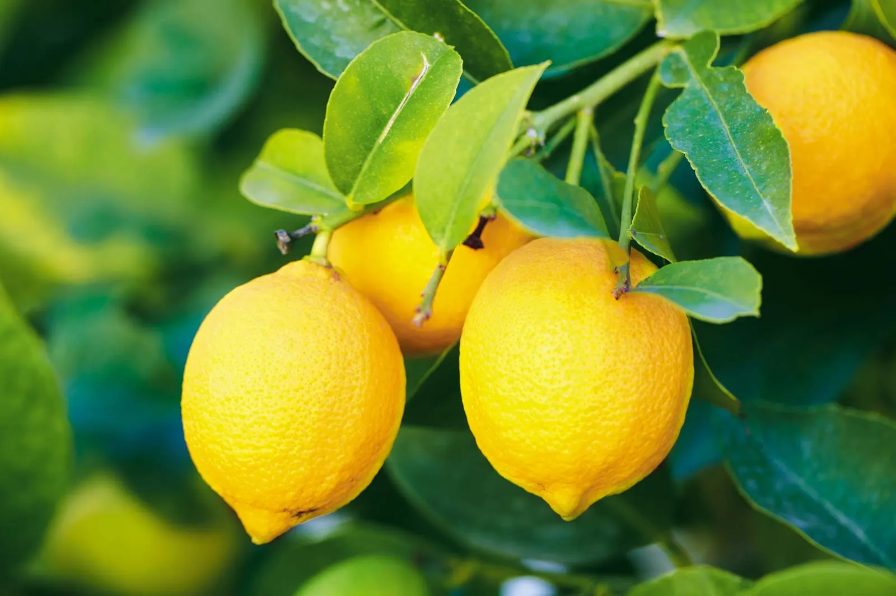

Plants
In this Article we have discussed about 5 Different Plants, Which are mentioned below ↓
Bamboos are a diverse group of mostly evergreen perennial flowering plants making up the subfamily Bambusoideae of the grass family Poaceae. Giant bamboos are the largest members of the grass family, in the case of Dendrocalamus sinicus individual culms reaching a length of 46 meters, up to 36 centimeters in thickness and a weight of up to 450 kilograms. The internodes of bamboos can also be of great length. Kinabaluchloa wrayi has internodes up to 2.5 meters in length. and Arthrostylidium schombergkii with lower internodes up to 5 meters in length, exceeded in length only by papyrus. By contrast, the culms of the tiny bamboo Raddiella vanessiae of the savannas of French Guiana are only 10-20 millimeters in length by about two millimeters in width. The origin of the word "bamboo" is uncertain, but it probably comes from the Dutch or Portuguese language, which originally borrowed it from Malay or Kannada.
A Rose is either a woody perennial flowering plant of the genus Rosa, in the family Rosacea or the flower it bears. There are over three hundred species and tens of thousands of cultivars. They form a group of plants that can be erect shrubs, climbing, or trailing, with stems that are often armed with sharp prickles. Their flowers vary in size and shape and are usually large and showy, in colours ranging from white through yellows and reds. Most species are native to Asia, with smaller numbers native to Europe, North America, and northwestern Africa. Species, cultivars and hybrids are all widely grown for their beauty and often are fragrant. Roses have acquired cultural significance in many societies. Rose plants range in size from compact, miniature roses, to climbers that can reach seven meters in height.[ Different species hybridize easily, and this has been used in the development of the wide range of garden roses.

Agave is a genus of monocots native to the hot and arid regions of the Americas and the Caribbean, although some Agave species are also native to tropical areas of North America, such as Mexico. The genus is primarily known for its succulent and xerophytic species that typically form large rosettes of strong, fleshy leaves. Agave now includes species formerly placed in a number of other genera, such as Manfreda, Mangave, Polianthes and Prochnyanthes.
The Lemon is a species of small evergreen tree in the flowering plant family Rutaceae, native to Asia, primarily Northeast India (Assam), Northern Myanmar, or China.[The tree's ellipsoidal yellow fruit is used for culinary and non-culinary purposes throughout the world, primarily for its juice, which has both culinary and cleaning uses. The pulp and rind are also used in cooking and baking. The juice of the lemon is about 5-6% citric acid, with a pH of around 2.2, giving it a sour taste. The distinctive sour taste of lemon juice, derived from the citric acid, makes it a key ingredient in drinks and foods such as lemonade and lemon meringue pie.
Aloe vera is a succulent plant species of the genus It is widely distributed, and is considered an invasive species in many world regions. An evergreen perennial, it originates from the Arabian Peninsula, but grows wild in tropical, semi-tropical, and arid climates around the world. It is cultivated for commercial products, mainly as a topical treatment used over centuries. The species is attractive for decorative purposes, and succeeds indoors as a potted plant.The leaves of Aloe vera contain significant amounts of the polysaccharide gel acemannan which can be used for a wide range of medical purposes. The skin contains aloin which is toxic. Products made from Aloe vera usually only use the gel. There are many products containing aloe vera's acemannan, including skin lotions, cosmetics, ointments and gels for minor burns and skin abrasions.